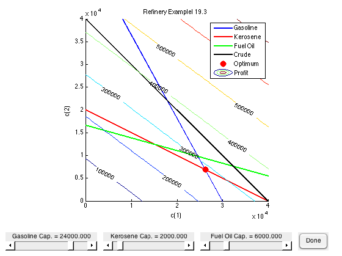

Example 19.03
File: Ch19_E03.m
Determine the optimal production schedule for the following process.
____________
| |----> Gasoline ($36/bbl)
Crude 1 ($24/bbl) ---->| |----> Kerosene ($24/bbl)
| Refinery |----> Fuel Oil ($21/bbl)
Crude 2 ($15/bbl) ---->| |----> Residual ($10/bbl)
|____________| Volumetric Yield Capacity
Crude #1 Crude #2 bbl/day
Gasoline 80% 44% 24,000
Kerosine 5% 10% 2,000
Fuel Oil 10% 36% 6,000Processing Cost $0.50/bbl $1.00/bbl
Contents
Script Requirments
- displaytable.m
- CVX
addpath('utilities');
Decision Variables
clabels = {'Crude 1','Crude 2'};
plabels = {'Gasoline','Kerosene','Fuel Oil','Residual'};
CVX Optimization Model
cvx_begin
% Decision Variables
variables c(2) p(4)
c >= 0; p <= 100000;
p >= 0; p <= 100000;
% Objective Function
revenue = 36*p(1) + 24*p(2) + 21*p(3) + 10*p(4);
rawmaterials = 24*c(1) + 15*c(2);
processing = 0.5*c(1) + 1.0*c(2);
profit = revenue - rawmaterials - processing;
maximize(profit)
% Refinery Yield Model
Y = [0.80 0.44; 0.05 0.10; 0.10 0.36; 0.05 0.10];
p == Y*c;
% Refinery Production Capacity
dual variable z
Capacity = [24000; 2000; 6000; 100000];
z : p <= Capacity;
cvx_end
Crude Utilization
displaytable(c,clabels,'bbl/day','%6.1f');
bbl/day Crude 1 26206.9 Crude 2 6896.6
Production
displaytable(p,plabels,'bbl/day','%6.1f');
bbl/day Gasoline 24000.0 Kerosene 2000.0 Fuel Oil 5103.4 Residual 2000.0
Process Utilization
displaytable( ... [p, Capacity, Capacity - p, z], plabels, ... {'Production','Capacity','Slack','Sensitivity'},'%6.1f');
Production Capacity Slack Sensitivity Gasoline 24000.0 24000.0 0.0 4.7 Kerosene 2000.0 2000.0 0.0 87.5 Fuel Oil 5103.4 6000.0 896.6 0.0 Residual 2000.0 100000.0 98000.0 0.0
Questions to Explore
- Why is the sensitivity so high for Kerosene?
- You're considering expanding the Kerosene and Fuel Oil capacities for the plant. Each bbl of additional capacity has the same cost. Plot the additional profit as a function of additional capacity.
Reduction to Two Variables
This example consists of six decision variables with four equality constraints. The four equalities can be used to eliminate four of the decision variables. Normally this exercise is unnecessary since linear programming software is sufficiently reliable to do these calculations. But in this instance, reducing the problem to two variables will allow us to explore the solution graphically and gain some interesting insights.
Y = [0.80 0.44; 0.05 0.10; 0.10 0.36; 0.05 0.10]; gcap = 24000; kcap = 2000; fcap = 6000; ccap = 40000; lb = [0;0]; prod_price = [36 24 21 10]; crude_price = [24 15]; process_cost = [0.5 1.0]; fc = prod_price*Y - crude_price - process_cost; A = [Y(1:3,:); 1 1]; c = linprog(-fc,Y(1:3,:),[gcap;kcap;fcap],[],[],lb) clf; subplot(8,1,1:7); [C1,C2] = meshgrid(0:1000:40000,0:1000:40000); hold on; gasoline = plot([gcap/Y(1,1) 0],[0 gcap/Y(1,2)],'b','LineWidth',2); kerosene = plot([kcap/Y(2,1) 0],[0 kcap/Y(2,2)],'r','LineWidth',2); fuel_oil = plot([fcap/Y(3,1) 0],[0 fcap/Y(3,2)],'g','LineWidth',2); crude = plot([40000 0],[0 40000],'k','LineWidth',2); optimum = plot(c(1),c(2),'r.','Markersize',30); contour(C1,C2,fc(1)*C1+fc(2)*C2,'ShowText','on'); hold off; legend({'Gasoline','Kerosene','Fuel Oil','Crude','Optimum','Profit'}); axis([0 40000 0 40000]); axis('square'); xlabel('c(1)'); ylabel('c(2)'); title('Refinery Examplel 19.3'); update = @(gcap,kcap,fcap) { ... suiPlot(gasoline,[gcap/Y(1,1) 0],[0 gcap/Y(1,2)]); suiPlot(kerosene,[kcap/Y(2,1) 0],[0 kcap/Y(2,2)]); suiPlot(fuel_oil,[fcap/Y(3,1) 0],[0 fcap/Y(3,2)]); suiPlot(optimum,linprog(-fc,A,[gcap;kcap;fcap;ccap],[],[],lb,[])') }; [g,loc] = suiSlider(0,30000,gcap,'Gasoline Cap.',[10,10],150); [k,loc] = suiSlider(0,30000,kcap,'Kerosene Cap.',loc.Right,150); [f,loc] = suiSlider(0,30000,fcap,'Fuel Oil Cap.',loc.Right,150); suiButton(@()close('all'),'Done',loc.Right,50); suiUpdate(@()update(g(),k(),f()));
Optimization terminated.
c =
1.0e+04 *
2.6207
0.6897
